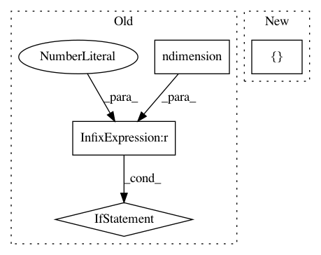

f47e301e50018af3365e3717e3ab1d8e07d297b5,gpytorch/kernels/grid_kernel.py,GridKernel,__init__,#GridKernel#Any#Any#Any#,9
Before Change
def __init__(self, base_kernel_module, inducing_points, grid):
super(GridKernel, self).__init__()
self.base_kernel_module = base_kernel_module
if inducing_points.ndimension() != 2:
raise RuntimeError("Inducing points should be 2 dimensional")
self.register_buffer("inducing_points", inducing_points.unsqueeze(0))
self.register_buffer("grid", grid)
def train(self, mode=True):
After Change
class GridKernel(Kernel):
def __init__(self, base_kernel_module, inducing_points, grid, active_dims=None):
super(GridKernel, self).__init__(active_dims=active_dims)
self.base_kernel_module = base_kernel_module
if inducing_points.ndimension() != 2:
raise RuntimeError("Inducing points should be 2 dimensional")
In pattern: SUPERPATTERN
Frequency: 4
Non-data size: 4
Instances
Project Name: cornellius-gp/gpytorch
Commit Name: f47e301e50018af3365e3717e3ab1d8e07d297b5
Time: 2018-03-15
Author: darbour@fb.com
File Name: gpytorch/kernels/grid_kernel.py
Class Name: GridKernel
Method Name: __init__
Project Name: cornellius-gp/gpytorch
Commit Name: 7570ee1d758c93dd4054009fc12be6cc31b54031
Time: 2018-11-25
Author: gpleiss@gmail.com
File Name: gpytorch/lazy/interpolated_lazy_tensor.py
Class Name: InterpolatedLazyTensor
Method Name: diag
Project Name: cornellius-gp/gpytorch
Commit Name: 6bf26a0ab5c0ea9e332216d1d48d4ce3c03a2f8d
Time: 2019-03-20
Author: jake.gardner@uber.com
File Name: gpytorch/kernels/kernel.py
Class Name: Kernel
Method Name: size
Project Name: cornellius-gp/gpytorch
Commit Name: effb02b4aa65dc30bd59104437f4b08dee2d76e6
Time: 2018-03-15
Author: darbour@fb.com
File Name: gpytorch/kernels/grid_kernel.py
Class Name: GridKernel
Method Name: __init__